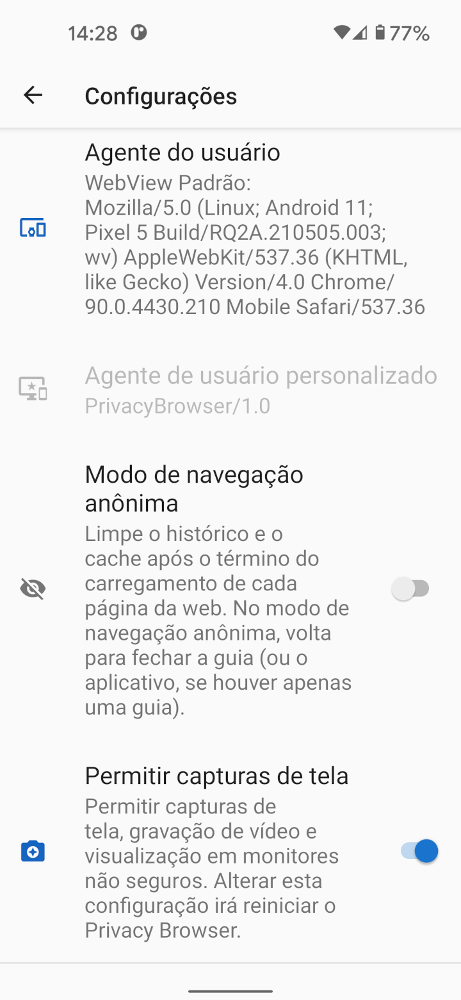

Quando os navegadores da web se conectam a sites, eles enviam um agente do usuário, que identifica o navegador e os recursos de renderização que possui. O servidor da web pode usar essas informações para decidir qual versão do site enviar para o navegador. Por exemplo, muitos sites têm versões diferentes para navegadores de desktop e móveis.
Por padrão, o Privacy Browser usa seu próprio agente de usuário, que é PrivacyBrowser/1.0. Isso envia um mínimo de informações para o servidor da web.
Como os servidores da web não reconhecem este como um agente de usuário móvel, eles geralmente exibem a versão desktop do site.
Em comparação, o agente de usuário padrão do WebView divulga uma grande quantidade de informações sobre o hardware e software do dispositivo. Na tela Configurações, selecionar WebView Padrão como o Agente do usuário exibe o agente do usuário que será enviado. A captura de tela abaixo mostra um Pixel 5 rodando Android 11 com Android System WebView 90.0.4430.210 instalado. A maioria dos servidores da web o reconhecerá como um navegador móvel e exibirá a versão móvel do site, se houver.
Há informações suficientes no agente do usuário para queapenas para alguns visitantes de um site, às vezes, sejam os mesmos. Se o agente do usuário for combinado com outra informação de identificação não exclusiva, geralmente resulta em uma impressão digital exclusiva. A Electronic Frontier Foundation criou uma ferramenta chamada Cover Your Tracks para demonstrar quanta informação pode ser obtida dessas fontes. Se este teste for executado com o JavaScript habilitado, a quantidade de informações divulgadas aumenta muito. Browser Leaks e Am I Unique também são boas fontes de informações sobre este tópico.
Existem vários agentes de usuário predefinidos que correspondem a navegadores e sistemas operacionais comuns.
Para fins de impressão digital do navegador, qualquer coisa rara é mais fácil de rastrear.
Se o Privacy Browser se tornar comum e muitas pessoas usarem PrivacyBrowser/1.0 como seu agente de usuário, será uma boa escolha para privacidade.
Firefox ou Chrome são os agentes de usuário mais comuns, mas eles se atualizam automaticamente e seus números de versão mudam tão rapidamente que provavelmente os agentes de usuário
incluídos no Privacy Browser frequentemente estará fora de sincronia com a maioria dos agentes de usuário nos logs do servidor.
Alguns sites não funcionam corretamente se não reconhecem o agente do usuário. Usar as configurações de domínio para definir o agente do usuário para WebView Padrão ou outro agente do usuário comumente reconhecido geralmente resolve o problema. O WebView do Android não permite que o agente do usuário fique em branco. Se for, o WebView simplesmente envia o agente do usuário padrão para o servidor.